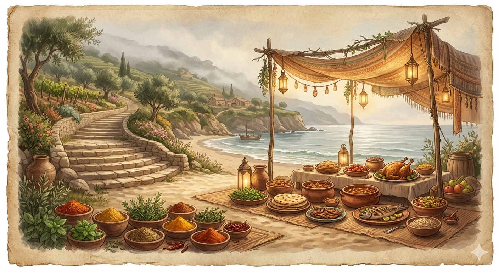

Complete front-end logic and UI; skill matching and synonyms; scoring; quick-screen and final decision; scam detection; OCR workflow; PDF extraction; salary rules; message templates and generator; Shorten/Focus/Polish; history, drafts, JSON export, copy/download; local-storage tracker.
Tools
HTML, CSS, JavaScript, Tesseract.js, PDF.js, browser local storage, CDN libraries.
Note
Message Builder is a built-in feature, not a separate tool.
Note: These tools were created with AI assistance. As a non-technical person, I used AI tools to help build and refine the interface, logic, and features. I regularly check the tools and explore ways to improve them further based on real usage and results.
Future route
Improve offline-first tools; share selected experiments when ready; explore useful digital products that help people organize, plan, and create.

05 Food & Well-being
The Saffron Shores
Warm shores of everyday meals, better choices, and small experiments in feeling good.
What you’ll find
Exploring healthy food combinations and simple well-being habits.
Current status
Exploring food combinations and healthier routines.
Future route
Share food experiments, simple recipes, and well-being notes.
Current Coordinates
Where the journey stands today.
Reading
Web novels across fantasy, progression, adventure, fiction, fanfiction, and character-driven stories.
Playing
Game of Thrones: Kings Road.
Learning
Data Analytics Certification — SQL, Tableau, Power BI, Advanced Excel.
Making
Personal and professional portfolios.
Exploring
AI tools and healthy food combinations.
Professional Snapshot
For my professional experience, capabilities, recognition, and career journey, visit my professional portfolio.